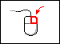
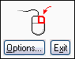
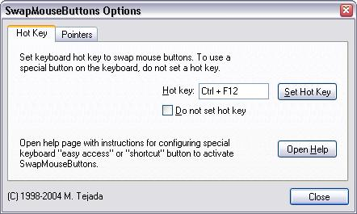
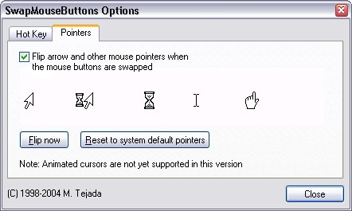

SwapMouseButtons
Aug-6-2005 v2.3
Introduction to
SwapMouseButtons
| SwapMouseButtons Instructions |
Swap the mouse buttons using the keyboard
- Press Ctrl-F12 once.
- A small window will appear in the center of the screen to indicate the main mouse button assignment.

Swap the mouse buttons using the Quick Launch Icon
- Click on the SwapMouseButtons icon in the Quick Launch toolbar (make sure you use the currently active mouse button).
- A small window will appear in the center of the screen to indicate the main mouse button assignment.
How to change the key assignment
-
Press Ctrl-F12 to activate SwapMouseButtons.
-
Click inside the small window that appears. An "Options..." button
will appear.
 -
Press the "Options..." button. A dialog box will appear. Click on
the "Hot key" tab.
-
In the "Hot key" edit box, press the key combination you wish to assign to
SwapMouseButtons. Then press the "Set Hot Key" button.
-
Close the dialog box and exit the SwapMouseButtons program.

How to disable pointer flipping
-
Press Ctrl-F12 to activate SwapMouseButtons.
-
Click inside the small window that appears. An "Options..." button
will appear.
-
Press the "Options..." button. A dialog box will appear. Click on
the "Pointers" tab.
-
Click on the "Flip arrow and other mouse pointers" checkbox to
remove the checkmark.
-
Close the dialog box and exit the SwapMouseButtons program.

Notes and known problems
-
Some non-Microsoft mouse drivers may interfere with the
operation of the SwapMouseButtons program. For example, this
may occur with trackpad drivers on some laptop computers.
-
Animated mouse pointers are not supported yet in this
version of SwapMouseButtons. When the pointers are flipped to
left-handed mode, the animation will become disabled.
-
In some rare cases when using Remote Desktop, the flipping of
the mouse pointers to left-handed pointers may cause the pointer
image to become distorted upon logging in remotely. To restore
the pointer, press Ctrl-F12 twice.
-
When assigning a hot key, to avoid conflicts with other software,
assign a seldom used key combination such as Ctrl-F11 or Ctrl-F12.
-
In older versions of Windows such as Windows 98, it is possible
to assign keys such as F11 or F12 without the Ctrl key.
-
After changing the hot key, the previous hot key will become
disabled after logging off or restarting Windows.
How to uninstall
- Click on the Start menu and select "Settings" > "Control Panel".
- Double click on "Add or Remove Programs".
- Find "SwapMouseButtons" click on it.
- Click on the "Change/Remove" button.
- Follow the uninstallation sequence that continues.